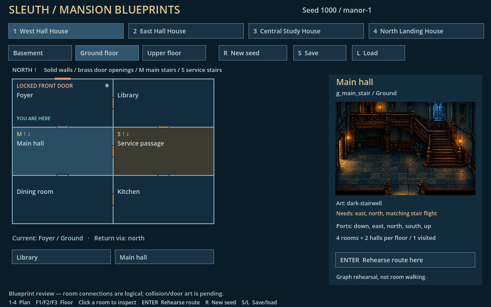
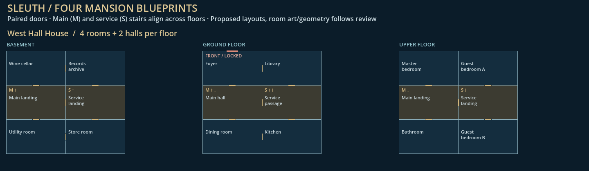
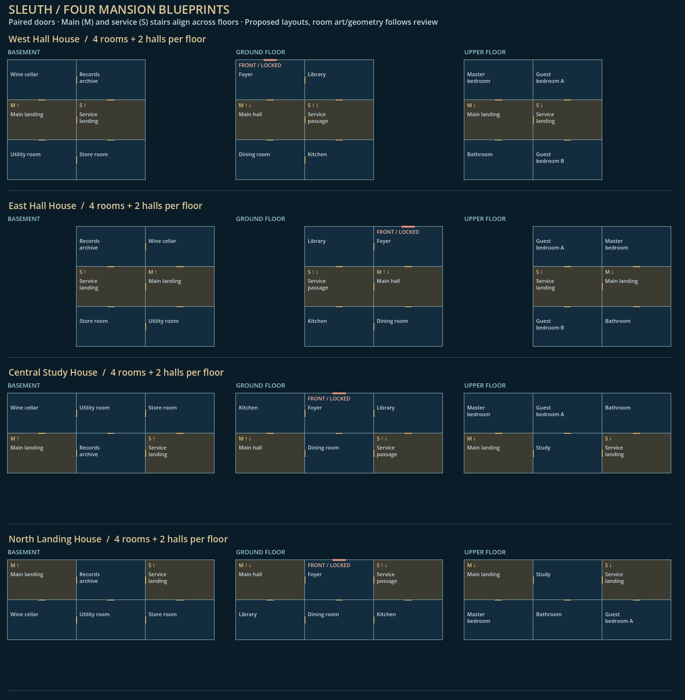

Four layouts with four main rooms and two hallways per floor. Stairs are inside the hallways. The foyer's north/front door is locked; there is no outside route. Main and service stairs provide alternate routes between floors.


The engine review scene is src/mansion/blueprint_review.tscn: open it in Godot and press F6. Click rooms to inspect their art, use Enter to rehearse a route, and save/load to check remembered floors and return ports. The pictures above are captures, not live controls.
Design and controls · Art and doorway requirements · Blueprint data
Room walking, collision geometry and physical stair transitions are not implemented by these blueprints. New-game selection and logical floor/exit memory are implemented separately from the existing playable foyer.
